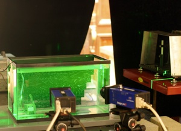

|  |
O'Brien Hall
The BEFL facilities are located in O'Brien Hall on the UC Berkeley campus. The facilities in O'Brien include two offices for graduate students, a workshop for field equipment, and various laboratory equipment including several large flumes.
O'Brien Hall is located on the North side of campus next to Davis Hall, home of the Civil and Environmental Engineering Department.
Engineering Laboratory for Fluid Motion in the Environment (ELFME)
The laboratory facilities are used to provide detailed measurements of environmentally relevant flows in a controlled manner. The Einstein Flume is a laboratory flume with a rich history, beginning with professor Hans Albert Einstein work on sediment transport. Today it is used for a variety of research and teaching projects. Its key features that distinguish it from similar flumes found in most fluid labs are its length, tilting bed, and sediment-handling capabilities. Its size is an excellent balance between the large scales needed to represent environmentally relevant flows and the small scales needed to undertake controlled laboratory experiments.
The Insulated Basin/Air-Sea interaction tank is a double-paned water basin with an active grid wind tunnel installed above it. This allows motions at the wind-driven air-water interface to be measured in a controlled and repeatable fashion. The double-paned walls reduce thermal gradients at the boundaries that can lead to undesired buoyant transport, and the active grid provides a high degree of adjustability in the characteristics of the wind forcing.
A wave tank provides the opportunity to study waves and the transport of sediment beneath them. The length of the wave tank allows evolution of wave forms to simulate an open ocean state before breaking on the mobile-sediment beach.
A stirred turbulence tank has recently been constructed. It features a very large region in which turbulence is both homogeneous and isotropic, and thus is an ideal facility for understanding the basics of how turbulence affects transport.
A stereoscopic particle image velocimetry (2D-3C PIV) system enables the measurement of spatiotemporal flow dynamics using digital images of flowing water. The image processing routines include includes subwindow distortion and particle tracking techniques, which allows measurements to be made near boundaries and in highly turbulent flows. Both of these cases are particularly relevant to environmental flows.
The core measurement capability of PIV is augmented by a variety of additional quantitative imaging technology, including laser-induced fluorescence (LIF) for measuring the spatiotemporal structure of pollutant/nutrient transport in water flows and borescope image delivery for measuring motions in flows made opaque by heavy sediment loads.